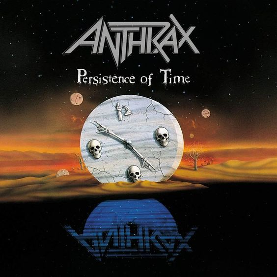
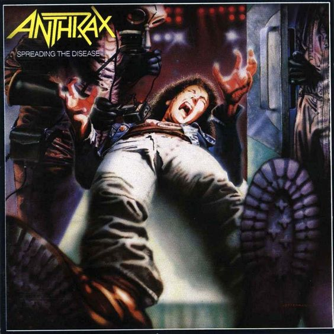
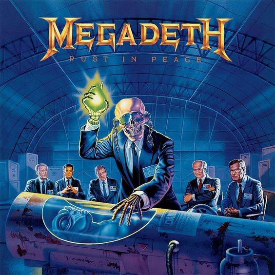
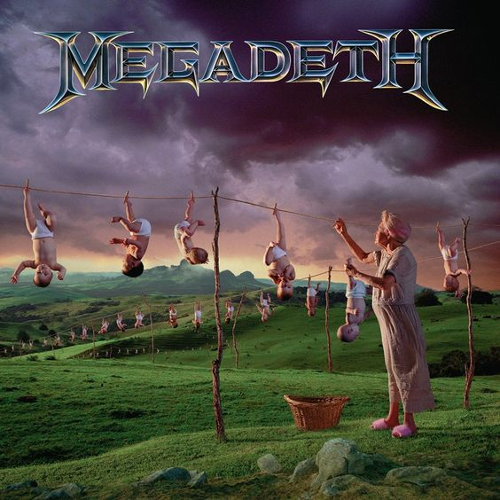
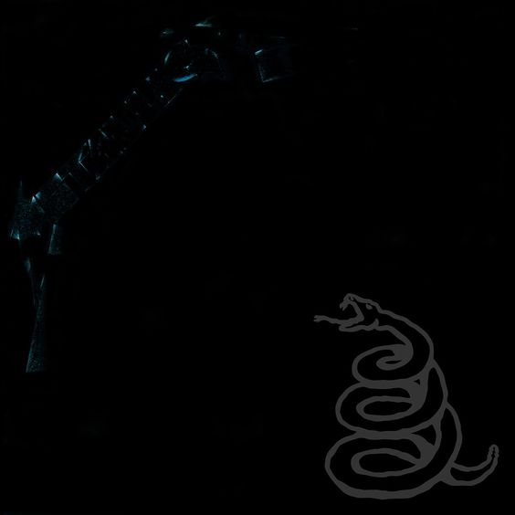
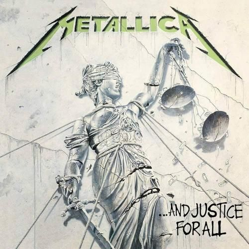
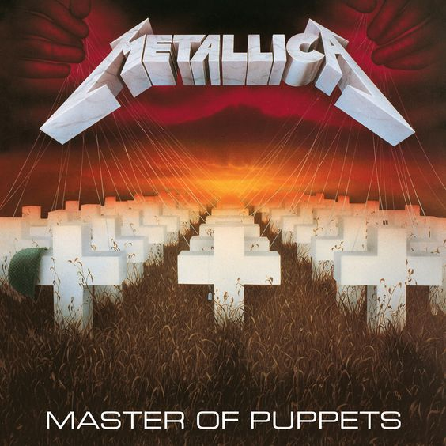
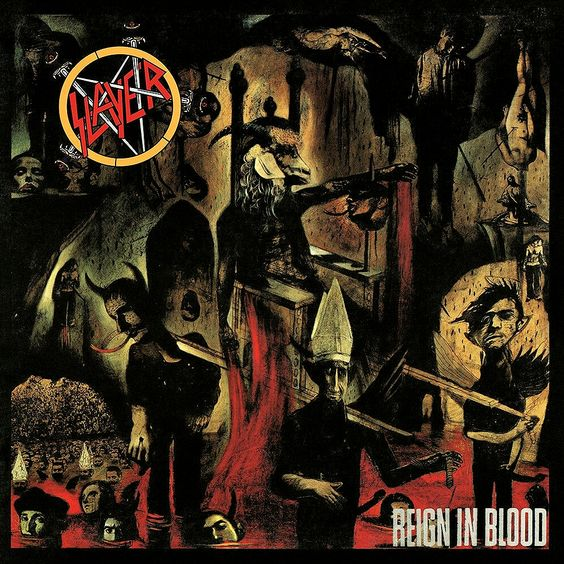
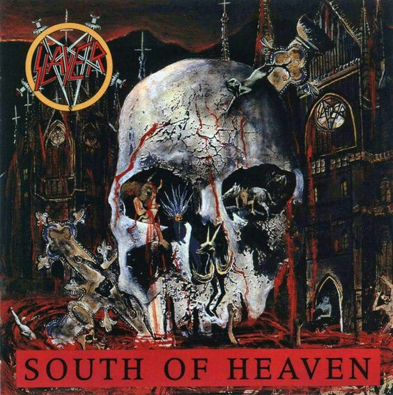
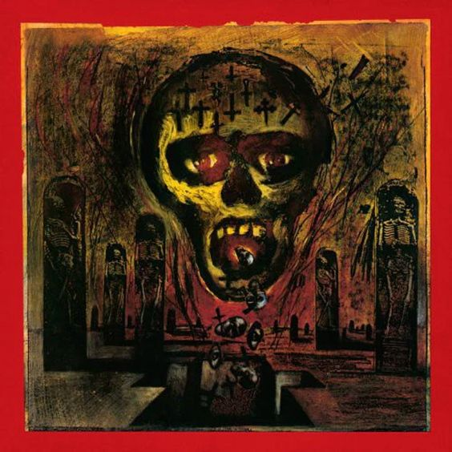

Separamos para você os principais álbuns do "Big Four" do thrash metal: Metallica,
Megadeth, Slayer e Anthrax. Estas quatro bandas são consideradas as pioneiras do gênero e tiveram um impacto
significativo na cena do heavy metal.
Os álbuns apresentados foram selecionados com base no número de vendas, refletindo o sucesso e a
popularidade de cada um deles. Cada disco representa um marco na carreira de suas respectivas bandas,
trazendo clássicos que definiram o estilo e influenciaram gerações de músicos.
Amplamente considerado o álbum de sucesso do Anthrax, Among the Living é um
dos mais vendidos em sua discografia. Ele contém algumas das músicas mais icônicas da banda, como
"Caught in a Mosh" e "Indians".."

Persistence of Time apresenta um som mais maduro e sombrio em comparação com
os álbuns anteriores. É conhecido por músicas como "In My World" e o cover da banda de "Got the
Time" de Joe Jackson.

Este álbum marcou um passo significativo para o Anthrax, sendo o segundo da
banda e o primeiro com Joey Belladonna como vocalista principal. Músicas como "Madhouse" ajudaram a
impulsionar suas vendas e popularidade.
O álbum mais vendido do Megadeth é Countdown to Extinction, com mais
de 2 milhões de cópias vendidas nos EUA. Inclui faixas icônicas como "Symphony of Destruction" e
"Sweating Bullets."

Este álbum é amplamente considerado um dos melhores álbuns de thrash metal de
todos os tempos. Contém clássicos como "Holy Wars... The Punishment Due" e "Hangar 18" e é um dos
favoritos entre os fãs.

Após o sucesso de Countdown to Extinction, Youthanasia manteve a tendência
mais melódica do Megadeth. O álbum também vendeu bem e inclui músicas populares como "A Tout Le
Monde."

Este é o álbum mais vendido do Metallica e um dos álbuns mais vendidos da
história do rock, Com mais de 30 milhões de cópias vendidas em todo o mundo, contendo "Enter
Sandman," "The Unforgiven," e "Nothing Else Matters."

Este álbum marcou uma evolução no som da banda e foi um sucesso comercial,
vendendo mais de 8 milhões de cópias. Faixas como "One" e "Harvester of Sorrow" se tornaram
icônicas.

Considerado um dos maiores álbuns de thrash metal de todos os tempos, Master
of Puppets vendeu mais de 6 milhões de cópias só nos EUA. A faixa-título e "Battery" são alguns dos
destaques.

Considerado um clássico do thrash metal, é conhecido pela velocidade extrema
e
agressividade. Músicas como "Angel of Death" e "Raining Blood" definiram o estilo da banda.

Este álbum marcou uma mudança no som do Slayer, com um ritmo mais lento e
letras sombrias. Ele mostrou a versatilidade da banda e consolidou sua posição no metal extremo.

Combina a brutalidade de álbuns anteriores com uma abordagem mais lenta. É
conhecido por músicas como "War Ensemble" e ajudou a manter o Slayer no topo do thrash metal.